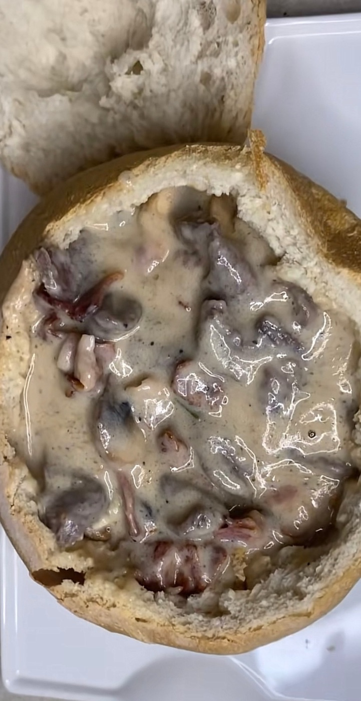

Un paisa cocinando en España 🇨🇴🇪🇸
Deja que la imaginación vuele
Atrévete a cocinar conmigo y aprendamos juntos. Los límites están en tu mente.
 Patacones con camarón →
Patacones con camarón →
Recetas
Patacones con camarón
Patacón crujiente con camarones en salsa rosada, cebolla roja y cilantro.
Ver receta →
Hamburguesa PR7
Hamburguesa de tres carnes con queso, tocino, aros de cebolla y papas al airfryer.
Ver receta →
Panne Cook
Pan redondo relleno de tocino, carne y champiñones en una salsa blanca cremosa.
Ver receta →